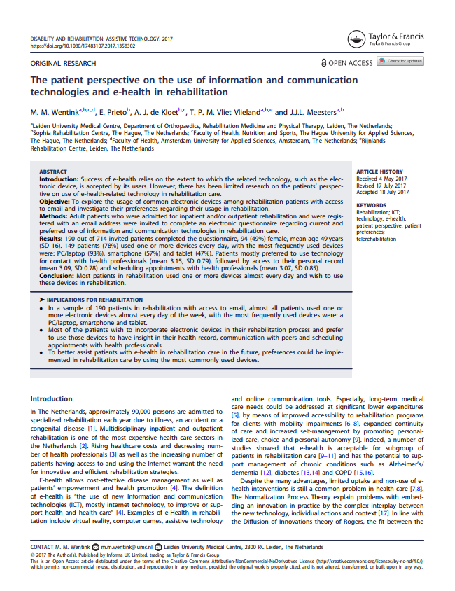

<!DOCTYPE html>
<html>
  <head>
    <meta charset="utf-8"/>
    <link rel="stylesheet" href="CSS/publicatie-weergave.css" type="text/css"/>
    <title>Publicatie-weergave</title>
  </head>

<body>
  <main id="main-page">
    <section >
  <header class="publication-header fullWidth text-left">
    <h1 class="sevencolumns text-left">The patient perspective on the use of information and communication technologies
      and e-health in rehabilitation </h1>
    <h4 class="sevencolumns text-left">19 Feb 2019</h4>
    <h4 class="sevencolumns text-left">Auteur: M.M. Wentink, E. Prieto, A.J. de Kloet, T.P.M. Vliet Vlieland en J.J.L. Meesters </h4>
    <a  class="sevencolumns text-left" href="#">Gerelateerde artikelen (2+)</a>
    <!-- Publication data -->

    <p class="twocolumn text-right" id="publication-stats"> Aantal citaten: <span id= ... > 4 </span> <br />
        Aanbevelingen: <span id= ...> 3 </span> <br />
        Aantal weergaven: <span id = ... > 300 </span> <br /> </p>
  </header>

  <main class="fullWidth">
    <article class="text-left" id="abstract">
      <h4>Abstract / Synopsis </h4>
      <a href="#" class="pencil-icon" id="edit-icon">  </a>
      <a href="#" id="edit-text">Schrijf artikel </a>
      <!-- Linked to "publish article page or modal panel" -->
        <p>Introduction: Success of e-health relies on the extent to which the related technology, such as the electronic device, is accepted by its users. However, there has been limited research on the patients’ perspective on use of e-health-related technology in rehabilitation care.
Objective: To explore the usage of common electronic devices among rehabilitation patients with access
to email and investigate their preferences regarding their usage in rehabilitation.
Methods: Adult patients who were admitted for inpatient and/or outpatient rehabilitation and were registered with an email address were invited to complete an electronic questionnaire regarding current and
preferred use of information and communication technologies in rehabilitation care.
Results: 190 out of 714 invited patients completed the questionnaire, 94 (49%) female, mean age 49 years
(SD 16). 149 patients (78%) used one or more devices every day, with the most frequently used devices
were: PC/laptop (93%), smartphone (57%) and tablet (47%). Patients mostly preferred to use technology
for contact with health professionals (mean 3.15, SD 0.79), followed by access to their personal record
(mean 3.09, SD 0.78) and scheduling appointments with health professionals (mean 3.07, SD 0.85).
Conclusion: Most patients in rehabilitation used one or more devices almost every day and wish to use
these devices in rehabilitation.
</p>
<p>
 IMPLICATIONS FOR REHABILITATION
 In a sample of 190 patients in rehabilitation with access to email, almost all patients used one or
more electronic devices almost every day of the week, with the most frequently used devices were: a
PC/laptop, smartphone and tablet.
 Most of the patients wish to incorporate electronic devices in their rehabilitation process and prefer
to use those devices to have insight in their health record, communication with peers and scheduling
appointments with health professionals.
 To better assist patients with e-health in rehabilitation care in the future, preferences could be implemented in rehabilitation care by using the most commonly used devices. </p>
    </article>


    <button class="threecolumns nopadding" id="download-button">Download publicatie</button>
    <div class="threecolumns nopadding">
      <div class="icon-box">
        <a href="#" class="thumb-up-icon"></a>
        <span class="icon-text">Beveel aan</span>
      </div>
      <!-- Recommend icon -->
      <div class="icon-box">
        <a href="#" class="bell-icon"></a>
        <span class="icon-text">Volg updates</span>
      </div>
      <!-- Follow updates icon -->
      <div class="icon-box">
        <a href="#" class="bookmark-icon"></a>
        <span class="icon-text">Bookmark</span>
      </div>
      <!-- Boomark icon -->
    </div>

    <div class="threecolumns nopadding" id="social-media-container">
      <a href="#" class="embed-icon">  </a>
      <a href="#" class="fb-icon">  </a>
      <a href="#" class="li-icon">  </a>
      <a href="#" class="whatsapp-icon">  </a>
      <a href="#" class="twitter-icon">  </a>
    </div>
    <article class="fullWidth">
      
      <!-- preview publication-->
    </article>
    </section>
  </main>
</main>
</body>

</html>
